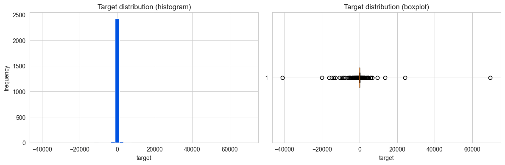

Baek Seunghan
Kaggle: https://www.kaggle.com/baek007
TL;DR

Target distribution — extreme tails
I started inside the lecture toolkit (Lec 02/03/06/07) and let the failures guide me.
cross_val_score, because one bad fold tanks the averaged version.Final model: median impute → standardize → winsorize[0.5, 99.5] → Ridge(α=1)
Calibration (linear family): OOF + ~0.018 ≈ Public LB
| Version | Approach | OOF | Public |
|---|---|---|---|
| v04 | ElasticNet (no winsor) | +0.0140 | +0.0320 |
| v07 | Winsor[1–99] Ridge(α10) | +0.0229 | +0.0434 |
| v07b | Winsor[0.5–99.5] Ridge(α1) | +0.0327 | +0.0484 |
| v07d | Winsor[0.1–99.9] Ridge(α0.01) | +0.0393 | +0.0190 |
v07d: OOF went UP but LB crashed → OOF can lie on this data.
Private shake-up (final)
| Team | Public | Private | Move |
|---|---|---|---|
| Pawel (pub #1) | 0.0560 | 0.0538 | ↓ 5th |
| yifeili00 | −0.093 | 0.0625 | ↑ 3rd |
| JixiangDing | −0.093 | 0.0624 | ↑ 4th |
| Me (v07b) | 0.0484 | 0.0501 | 0 — stayed |
Two teams negative on public ended up 3rd/4th on private. I was the only top entry whose rank didn't move.
What worked
What didn't (all documented)
On the dataset (constructive)
src/phase7b_winsor_all.py reproduces the final submission.